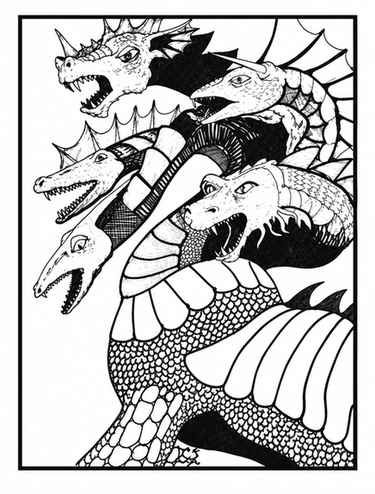

色彩龙 · Chromatic Dragon
 |
|
提亚马特统治九层地狱的第一层，是所有邪恶龙族的始祖。她憎恨一切善良，酷爱残暴并贪恋财宝。她极少离开巢穴（概率 10%），偶尔才会来到地上安置新龙或搜寻更多财宝；她能进行星界或以太旅行。
提亚马特体型太大，无法用爪攻击，但可同时用五个头咬击，并以尾刺攻击；也可同时以一个或多个头吐息，或施法。五个头分别为白、黑、绿、蓝、红色，各自使用对应龙种的吐息武器，形状与范围完全相同，伤害则等同相应龙种的巨型古龙：寒冷 56 点、酸液 64 点、氯气 72 点、电击 80 点、火焰 88 点。每种吐息每日只能使用一次。每个头还可施展两项法术：白头各施展两个一环法术，黑头两个二环，绿头两个三环，蓝头两个四环，红头两个五环。
每个头可承受 16 点伤害，之后暂时失去作用，须待次日再生恢复。若躯干受到超过 48 点伤害，提亚马特会被驱逐回自己的地狱位面；若在地狱中交战，则会被杀死，与其他魔鬼相同。提亚马特在巢穴中出现时，必有五名配偶／护卫陪同：白、黑、绿、蓝、红色各一条巨型成年雄龙；它们均能说话，并在条件允许时施法。
提亚马特各头颜色如上；颜色沿脖颈延伸至身体前部，形成条纹，之后在背部与后躯逐渐融为灰、蓝绿、紫三色，尾部则变为暗棕色。腹部与四肢呈绿白色，并渐渐融入身体上部的颜色。
上一节：青铜龙 · Bronze Dragon（Draco Gerus Bronzo）
下一节：赤铜龙 · Copper Dragon（Draco Comes Stabuli）